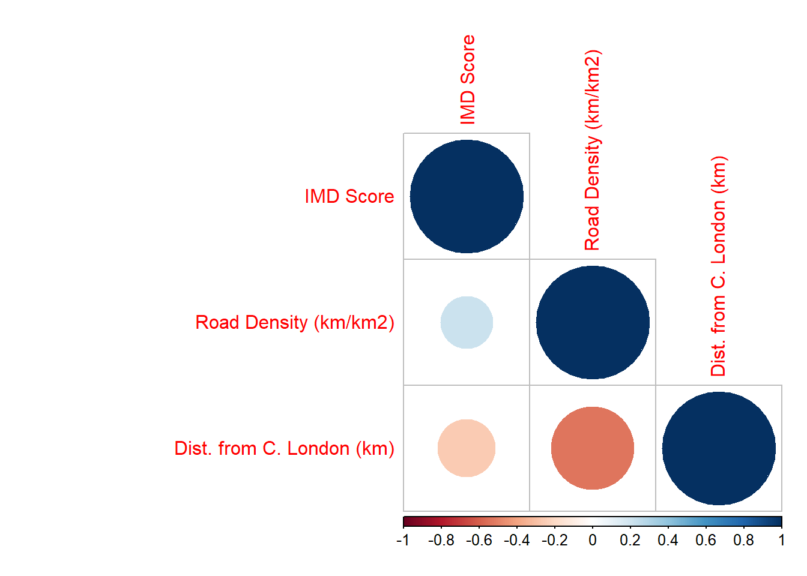

Research Question 3
1 Index of Multiple Deprivation
# Read in indices of deprivation data.
IDData <- read_csv("Data/Boundaries and Census/ID 2019 for London.csv",
locale = locale(encoding = "latin1"),
na = "n/a")## Parsed with column specification:
## cols(
## .default = col_double(),
## `LSOA code (2011)` = col_character(),
## `LSOA name (2011)` = col_character(),
## `Local Authority District code (2019)` = col_character(),
## `Local Authority District name (2019)` = col_character()
## )## See spec(...) for full column specifications.# Merge ID data to location data.
IDData<-merge(IDData,
SFLSOA,
by.x="LSOA code (2011)",
by.y="LSOA Code",
no.dups = TRUE,
all.x = TRUE)
# Extract relevent columns.
IDData <- IDData[,c(1, 31, 33, 5)]
# Rename columns.
colnames(IDData) <- c("LSOA Code", "MSOA Code", "LAD Code", "IMD Score")
# Aggregate IDM scores to MSOA and LADs.
IDLSOA <- IDData[,c(1, 4)]
IDMSOA <- aggregate(IDData[, 4], by = list(IDData$`MSOA Code`), FUN = mean)
IDLAD <- aggregate(IDData[, 4], by = list(IDData$`LAD Code`), FUN = mean)
IDMSOA[, 2] <- round(IDMSOA[, 2], digits = 3)
IDLAD[, 2] <- round(IDLAD[, 2], digits = 3)
colnames(IDMSOA) <- c("MSOA Code", "IMD Score")
colnames(IDLAD) <- c("LAD Code", "IMD Score")
# Merge ID data to boundaries.
SFLAD<-merge(SFLAD,
IDLAD,
by.x="LAD Code",
by.y="LAD Code",
no.dups = TRUE,
all.x = TRUE)
SFMSOA<-merge(SFMSOA,
IDMSOA,
by.x="MSOA Code",
by.y="MSOA Code",
no.dups = TRUE,
all.x = TRUE)
SFLSOA<-merge(SFLSOA,
IDLSOA,
by.x="LSOA Code",
by.y="LSOA Code",
no.dups = TRUE,
all.x = TRUE)2 Road Density
# Load road shapefile.
Roads <- st_read("Data/Air Pollution/LAEI 2016 Supporting Information/LAEI_MajorRoadNetwork_Link.shp")## Reading layer `LAEI_MajorRoadNetwork_Link' from data source `C:\Users\sammy\Desktop\Work\UCL\CASA0005 Geographic Information Systems and Science\Coursework\CASA0005 Coursework\Data\Air Pollution\LAEI 2016 Supporting Information\LAEI_MajorRoadNetwork_Link.shp' using driver `ESRI Shapefile'
## Simple feature collection with 78603 features and 24 fields
## geometry type: LINESTRING
## dimension: XY
## bbox: xmin: 500831 ymin: 152436 xmax: 560038 ymax: 204099.7
## epsg (SRID): NA
## proj4string: +proj=tmerc +lat_0=49 +lon_0=-2 +k=0.9996012717 +x_0=400000 +y_0=-100000 +datum=OSGB36 +units=m +no_defs# Tranform into an SF object.
SFRoads <- st_as_sf(Roads)
# Transform into BNG.
SFRoads <- st_transform(SFRoads, BNG)
# Select relevent columns.
SFRoads <- SFRoads[,c(6, 9, 25)]
# Rename columns.
colnames(SFRoads) <- c("Road Type", "Road Nature", "geometry")
# Copy and tranform MSOA SF into BNG
RoadsMSOA <- st_transform(SFMSOA, BNG)
# Run intersection.
RoadsMSOA <- st_intersection(SFRoads, RoadsMSOA)## Warning: attribute variables are assumed to be spatially constant throughout all geometries# Determine road lengths.
RoadsMSOA$`Road Length (km)` <- st_length(RoadsMSOA)/1000
# Aggregate road lengths.
RoadsMSOA <- aggregate(RoadsMSOA$`Road Length (km)`, by = list(RoadsMSOA$MSOA.Code), FUN = sum)
# Rename columns.
colnames(RoadsMSOA) <- c("MSOA Code", "Road Length (km)")
# Determine road density.
RoadsMSOA$`Road Density (km/km2)` <- round(as.numeric(RoadsMSOA$`Road Length (km)` / (st_area(SFMSOA) /1000000)), digits = 2)
# Round lengths.
RoadsMSOA[, 2] <- round(as.numeric(RoadsMSOA[, 2]), digits = 2)
# Merge road length with MSOA.
SFMSOA<-merge(SFMSOA,
RoadsMSOA,
by.x="MSOA Code",
by.y="MSOA Code",
no.dups = TRUE,
all.x = TRUE)3 Distance from Central London (Charing Cross)
# Create Postcode vector with Charing Cross postcode.
Postcode <- "WC2N5DU"
# Convert object to dataframe.
CharingCross <- data.frame(Postcode)
# Join code points.
CharingCross<-merge(CharingCross,
AllCodePoints,
by.x="Postcode",
by.y="Postcode",
no.dups = TRUE)
# Convert Charing Cross to SF.
CharingCross <- st_as_sf(CharingCross, coords = c("Eastings", "Northings"), crs = BNG)
# Get SF MSOA Codes.
SFCentroidMSOA <- data.frame(SFMSOA$`MSOA Code`)
# Set MSOA centroids.
SFCentroidMSOA[,2:3] <- coordinates(SPPointCluster)
# Change column names.
colnames(SFCentroidMSOA) <- c("MSOA Code", "Eastings", "Northings")
# Convert to SF.
SFCentroidMSOA <- st_as_sf(SFCentroidMSOA, coords = c("Eastings", "Northings"), crs = BNG)
# Determine distance of MSOA centroids to Charing Cross.
SFCentroidMSOA$`Dist. from C. London (km)` <- round(as.numeric(st_distance(SFCentroidMSOA$geometry, CharingCross)/1000), digits = 2)
# Remove geometry.
st_geometry(SFCentroidMSOA) <- NULL
# Join to SFMSOA.
SFMSOA<-merge(SFMSOA,
SFCentroidMSOA,
by.x="MSOA Code",
by.y="MSOA Code",
no.dups = TRUE,
all.x = TRUE)4 Linear Regression Model
# Conduct linear regression.
LRNO2 <- lm(`Mean NO2 Conc.` ~ `IMD Score` + `Road Density (km/km2)` + `Dist. from C. London (km)`, data = SFMSOA)
LRPM2.5 <- lm(`Mean PM2.5 Conc.` ~ `IMD Score` + `Road Density (km/km2)` + `Dist. from C. London (km)`, data = SFMSOA)
# Summarise data.
summary(LRNO2)##
## Call:
## lm(formula = `Mean NO2 Conc.` ~ `IMD Score` + `Road Density (km/km2)` +
## `Dist. from C. London (km)`, data = SFMSOA)
##
## Residuals:
## Min 1Q Median 3Q Max
## -4.854 -1.167 -0.057 0.896 10.043
##
## Coefficients:
## Estimate Std. Error t value Pr(>|t|)
## (Intercept) 39.696950 0.265804 149.347 < 2e-16 ***
## `IMD Score` 0.036811 0.005785 6.364 3.02e-10 ***
## `Road Density (km/km2)` 0.966191 0.032657 29.586 < 2e-16 ***
## `Dist. from C. London (km)` -0.637576 0.010932 -58.324 < 2e-16 ***
## ---
## Signif. codes: 0 '***' 0.001 '**' 0.01 '*' 0.05 '.' 0.1 ' ' 1
##
## Residual standard error: 1.649 on 979 degrees of freedom
## Multiple R-squared: 0.9035, Adjusted R-squared: 0.9032
## F-statistic: 3056 on 3 and 979 DF, p-value: < 2.2e-16summary(LRPM2.5)##
## Call:
## lm(formula = `Mean PM2.5 Conc.` ~ `IMD Score` + `Road Density (km/km2)` +
## `Dist. from C. London (km)`, data = SFMSOA)
##
## Residuals:
## Min 1Q Median 3Q Max
## -0.75444 -0.15949 -0.01655 0.13814 1.61795
##
## Coefficients:
## Estimate Std. Error t value Pr(>|t|)
## (Intercept) 13.9024912 0.0395100 351.873 < 2e-16 ***
## `IMD Score` 0.0038751 0.0008598 4.507 7.38e-06 ***
## `Road Density (km/km2)` 0.1345742 0.0048543 27.723 < 2e-16 ***
## `Dist. from C. London (km)` -0.1004925 0.0016249 -61.845 < 2e-16 ***
## ---
## Signif. codes: 0 '***' 0.001 '**' 0.01 '*' 0.05 '.' 0.1 ' ' 1
##
## Residual standard error: 0.2451 on 979 degrees of freedom
## Multiple R-squared: 0.9066, Adjusted R-squared: 0.9063
## F-statistic: 3166 on 3 and 979 DF, p-value: < 2.2e-16# Extract linear regression results.
LRResultsNO2 <- tidy(LRNO2)
LRResultsPM2.5 <- tidy(LRPM2.5)5 Linear Regression - Assumption 1
# Plot histogram on variables.
ggplot(SFMSOA, aes(x=`Mean NO2 Conc.`)) +
geom_histogram(aes(y = ..density..),binwidth = 1) +
geom_density(colour="red", size=1, adjust=1)ggplot(SFMSOA, aes(x=`Mean PM2.5 Conc.`)) +
geom_histogram(aes(y = ..density..),binwidth = 0.1) +
geom_density(colour="red", size=1, adjust=1)ggplot(SFMSOA, aes(x=`IMD Score`)) +
geom_histogram(aes(y = ..density..),binwidth = 1) +
geom_density(colour="red", size=1, adjust=1)ggplot(SFMSOA, aes(x=`Road Density (km/km2)`)) +
geom_histogram(aes(y = ..density..),binwidth = 1) +
geom_density(colour="red", size=1, adjust=1)ggplot(SFMSOA, aes(x=`Dist. from C. London (km)`)) +
geom_histogram(aes(y = ..density..),binwidth = 1) +
geom_density(colour="red", size=1, adjust=1)# Plot Scatter plot
qplot(x = `Mean NO2 Conc.`, y = `IMD Score`, data = SFMSOA)qplot(x = `Mean NO2 Conc.`, y = `Road Density (km/km2)`, data = SFMSOA)qplot(x = `Mean NO2 Conc.`, y = `Dist. from C. London (km)`, data = SFMSOA)6 Linear Regression - Assumption 2
# Plot linear regression model residuals in a histogram.
qplot(LRNO2$residuals) + geom_histogram() ## `stat_bin()` using `bins = 30`. Pick better value with `binwidth`.
## `stat_bin()` using `bins = 30`. Pick better value with `binwidth`.
qplot(LRPM2.5$residuals) + geom_histogram() ## `stat_bin()` using `bins = 30`. Pick better value with `binwidth`.
## `stat_bin()` using `bins = 30`. Pick better value with `binwidth`.
7 Linear Regression - Assumption 3
# Remove geometry of SFMSOA.
CorMSOA <- st_set_geometry(SFMSOA,NULL)
# Extract dependent varaiables
CorMSOA <- CorMSOA[,c("IMD Score", "Road Density (km/km2)", "Dist. from C. London (km)")]
# Calculate correlation matrix.
CorMSOA <- cor(CorMSOA, use="complete.obs", method="pearson")
# Plot correlation matrix.
corrplot(CorMSOA, type = "lower")# Calculate VIF.
vif(LRNO2)## `IMD Score` `Road Density (km/km2)` `Dist. from C. London (km)`
## 1.079822 1.411485 1.445274vif(LRPM2.5)## `IMD Score` `Road Density (km/km2)` `Dist. from C. London (km)`
## 1.079822 1.411485 1.4452748 Linear Regression - Assumption 4
# Plot model diagnostics.
plot(LRNO2)
plot(LRPM2.5)9 Linear Regression - Assumption 5
# Merge model residuals to shapefile.
SFMSOA$`LRNO2 Residuals` <- LRNO2$residuals
SFMSOA$`LRPM2.5 Residuals` <- LRPM2.5$residuals
# Map model residuals.
tm_shape(SFMSOA) +
tm_polygons("LRNO2 Residuals", palette = "RdYlBu")## Warning: The shape SFMSOA is invalid. See sf::st_is_valid## Variable "LRNO2 Residuals" contains positive and negative values, so midpoint is set to 0. Set midpoint = NA to show the full spectrum of the color palette.tm_shape(SFMSOA) +
tm_polygons("LRPM2.5 Residuals", palette = "RdYlBu")## Warning: The shape SFMSOA is invalid. See sf::st_is_valid## Variable "LRPM2.5 Residuals" contains positive and negative values, so midpoint is set to 0. Set midpoint = NA to show the full spectrum of the color palette.
# Convert SF objects to SP objects.
SPMSOA <- as(SFMSOA, "Spatial")
# Run Moran's I on residuals.
moran.test(SPMSOA@data$LRNO2.Residuals, SpWeightsMSOA)##
## Moran I test under randomisation
##
## data: SPMSOA@data$LRNO2.Residuals
## weights: SpWeightsMSOA
##
## Moran I statistic standard deviate = 37.052, p-value < 2.2e-16
## alternative hypothesis: greater
## sample estimates:
## Moran I statistic Expectation Variance
## 0.693091668 -0.001018330 0.000350938moran.test(SPMSOA@data$LRPM2.5.Residuals, SpWeightsMSOA)##
## Moran I test under randomisation
##
## data: SPMSOA@data$LRPM2.5.Residuals
## weights: SpWeightsMSOA
##
## Moran I statistic standard deviate = 33.876, p-value < 2.2e-16
## alternative hypothesis: greater
## sample estimates:
## Moran I statistic Expectation Variance
## 0.6329460582 -0.0010183299 0.000350228110 GWR
# Calculate kernel bandwidths.
GWRbandwidthNO2 <- gwr.sel(`Mean NO2 Conc.` ~ `IMD Score` + `Road Density (km/km2)` +`Dist. from C. London (km)`, data = SFMSOA, coords=CentroidMSOA, adapt=T)## Adaptive q: 0.381966 CV score: 2159.029
## Adaptive q: 0.618034 CV score: 2374.825
## Adaptive q: 0.236068 CV score: 1893.228
## Adaptive q: 0.145898 CV score: 1618.452
## Adaptive q: 0.09016994 CV score: 1404.759
## Adaptive q: 0.05572809 CV score: 1229.012
## Adaptive q: 0.03444185 CV score: 1066.084
## Adaptive q: 0.02128624 CV score: 927.7249
## Adaptive q: 0.01315562 CV score: 821.145
## Adaptive q: 0.008130619 CV score: 743.0468
## Adaptive q: 0.005024999 CV score: 700.1589
## Adaptive q: 0.00310562 CV score: 694.8845
## Adaptive q: 0.003441161 CV score: 689.1392
## Adaptive q: 0.003955792 CV score: 687.3265
## Adaptive q: 0.003808574 CV score: 687.2194
## Adaptive q: 0.003850728 CV score: 687.2062
## Adaptive q: 0.003891418 CV score: 687.2276
## Adaptive q: 0.003850728 CV score: 687.2062GWRbandwidthPM2.5 <- gwr.sel(`Mean PM2.5 Conc.` ~ `IMD Score` + `Road Density (km/km2)` + `Dist. from C. London (km)`, data = SFMSOA, coords=CentroidMSOA, adapt=T)## Adaptive q: 0.381966 CV score: 52.81942
## Adaptive q: 0.618034 CV score: 56.20016
## Adaptive q: 0.236068 CV score: 48.1472
## Adaptive q: 0.145898 CV score: 42.62459
## Adaptive q: 0.09016994 CV score: 37.59806
## Adaptive q: 0.05572809 CV score: 33.15437
## Adaptive q: 0.03444185 CV score: 28.74819
## Adaptive q: 0.02128624 CV score: 24.6271
## Adaptive q: 0.01315562 CV score: 21.12475
## Adaptive q: 0.008130619 CV score: 18.19072
## Adaptive q: 0.005024999 CV score: 16.15525
## Adaptive q: 0.00310562 CV score: 15.21066
## Adaptive q: 0.001919379 CV score: 15.70753
## Adaptive q: 0.003226455 CV score: 15.21012
## Adaptive q: 0.003267145 CV score: 15.21236
## Adaptive q: 0.003185765 CV score: 15.20906
## Adaptive q: 0.003185765 CV score: 15.20906# Run the GWR model.
GWRNO2 = gwr(`Mean NO2 Conc.` ~ `IMD Score` + `Road Density (km/km2)` + `Dist. from C. London (km)`, data = SFMSOA, coords=CentroidMSOA, adapt=GWRbandwidthNO2, hatmatrix=TRUE, se.fit=TRUE)
GWRPM2.5 = gwr(`Mean PM2.5 Conc.` ~ `IMD Score` + `Road Density (km/km2)` + `Dist. from C. London (km)`, data = SFMSOA, coords=CentroidMSOA, adapt=GWRbandwidthNO2, hatmatrix=TRUE, se.fit=TRUE)
# Save the results.
GWRNO2Results <- as.data.frame(GWRNO2$SDF)
GWRPM2.5Results <- as.data.frame(GWRPM2.5$SDF)
# Merge coefficients with shapefiles.
SFMSOA$`IMD NO2 Coef.`<- round(GWRNO2Results$X.IMD.Score., digits = 3)
SFMSOA$`Road Density NO2 Coef.`<- round(GWRNO2Results$X.Road.Density..km.km2.., digits = 3)
SFMSOA$`Dist. from C. London NO2 Coef.`<- round(GWRNO2Results$X.Dist..from.C..London..km.., digits = 3)
SFMSOA$`IMD PM2.5 Coef.`<- round(GWRPM2.5Results$X.IMD.Score., digits = 3)
SFMSOA$`Road Density PM2.5 Coef.`<- round(GWRPM2.5Results$X.Road.Density..km.km2.., digits = 3)
SFMSOA$`Dist. from C. London PM2.5 Coef.`<- round(GWRPM2.5Results$X.Dist..from.C..London..km.., digits = 3)
# Map coefficients.
NO2_IMD_Coef <- tm_shape(SFMSOA) +
tm_polygons(col = "IMD NO2 Coef.",
palette = "RdBu",
midpoint = 0)+
tm_shape(LAD) +
tm_polygons(col = NA, alpha = 0, border.col = "black", lwd = 2.0) +
tm_shape(MSOA) +
tm_polygons(col = NA, alpha = 0, border.col = "black", lwd = 1.0)+
tm_layout(legend.outside = TRUE,
legend.outside.position = "right",
frame = FALSE)+
tm_scale_bar(position = c("left", "bottom"))+
tm_compass(north = 0, position = c("right", "top"))+
tm_credits("(a)", position=c(0,0.85), size=1.5)
NO2_RD_Coef <- tm_shape(SFMSOA) +
tm_polygons(col = "Road Density NO2 Coef.",
palette = "RdBu",
midpoint = 0)+
tm_shape(LAD) +
tm_polygons(col = NA, alpha = 0, border.col = "black", lwd = 2.0) +
tm_shape(MSOA) +
tm_polygons(col = NA, alpha = 0, border.col = "black", lwd = 1.0)+
tm_layout(legend.outside = TRUE,
legend.outside.position = "right",
frame = FALSE)+
tm_scale_bar(position = c("left", "bottom"))+
tm_compass(north = 0, position = c("right", "top"))+
tm_credits("(b)", position=c(0,0.85), size=1.5)
NO2_DfCL_Coef <- tm_shape(SFMSOA) +
tm_polygons(col = "Dist. from C. London NO2 Coef.",
palette = "RdBu",
midpoint = 0)+
tm_shape(LAD) +
tm_polygons(col = NA, alpha = 0, border.col = "black", lwd = 2.0) +
tm_shape(MSOA) +
tm_polygons(col = NA, alpha = 0, border.col = "black", lwd = 1.0)+
tm_layout(legend.outside = TRUE,
legend.outside.position = "right",
frame = FALSE)+
tm_scale_bar(position = c("left", "bottom"))+
tm_compass(north = 0, position = c("right", "top"))+
tm_credits("(c)", position=c(0,0.85), size=1.5)
NO2_Coef <- tmap_arrange(NO2_IMD_Coef, NO2_RD_Coef, NO2_DfCL_Coef, ncol=1, nrow = 3)
NO2_Coef## Warning: The shape SFMSOA is invalid. See sf::st_is_valid## Warning: The shape MSOA is invalid. See sf::st_is_valid## Warning: The shape SFMSOA is invalid. See sf::st_is_valid## Warning: The shape MSOA is invalid. See sf::st_is_valid## Warning: The shape SFMSOA is invalid. See sf::st_is_valid## Warning: The shape MSOA is invalid. See sf::st_is_validPM2.5_IMD_Coef <- tm_shape(SFMSOA) +
tm_polygons(col = "IMD PM2.5 Coef.",
palette = "RdBu",
midpoint = 0)+
tm_shape(LAD) +
tm_polygons(col = NA, alpha = 0, border.col = "black", lwd = 2.0) +
tm_shape(MSOA) +
tm_polygons(col = NA, alpha = 0, border.col = "black", lwd = 1.0)+
tm_layout(legend.outside = TRUE,
legend.outside.position = "right",
frame = FALSE)+
tm_scale_bar(position = c("left", "bottom"))+
tm_compass(north = 0, position = c("right", "top"))+
tm_credits("(a)", position=c(0,0.85), size=1.5)
PM2.5_RD_Coef <- tm_shape(SFMSOA) +
tm_polygons(col = "Road Density PM2.5 Coef.",
palette = "RdBu",
midpoint = 0)+
tm_shape(LAD) +
tm_polygons(col = NA, alpha = 0, border.col = "black", lwd = 2.0) +
tm_shape(MSOA) +
tm_polygons(col = NA, alpha = 0, border.col = "black", lwd = 1.0)+
tm_layout(legend.outside = TRUE,
legend.outside.position = "right",
frame = FALSE)+
tm_scale_bar(position = c("left", "bottom"))+
tm_compass(north = 0, position = c("right", "top"))+
tm_credits("(b)", position=c(0,0.85), size=1.5)
PM2.5_DfCL_Coef <- tm_shape(SFMSOA) +
tm_polygons(col = "Dist. from C. London PM2.5 Coef.",
palette = "RdBu",
midpoint = 0)+
tm_shape(LAD) +
tm_polygons(col = NA, alpha = 0, border.col = "black", lwd = 2.0) +
tm_shape(MSOA) +
tm_polygons(col = NA, alpha = 0, border.col = "black", lwd = 1.0)+
tm_layout(legend.outside = TRUE,
legend.outside.position = "right",
frame = FALSE)+
tm_scale_bar(position = c("left", "bottom"))+
tm_compass(north = 0, position = c("right", "top"))+
tm_credits("(c)", position=c(0,0.85), size=1.5)
PM2.5_Coef <- tmap_arrange(PM2.5_IMD_Coef, PM2.5_RD_Coef, PM2.5_DfCL_Coef, ncol=1, nrow = 3)
PM2.5_Coef## Warning: The shape SFMSOA is invalid. See sf::st_is_valid
## Warning: The shape MSOA is invalid. See sf::st_is_valid## Warning: The shape SFMSOA is invalid. See sf::st_is_valid## Warning: The shape MSOA is invalid. See sf::st_is_valid## Warning: The shape SFMSOA is invalid. See sf::st_is_valid## Warning: The shape MSOA is invalid. See sf::st_is_valid